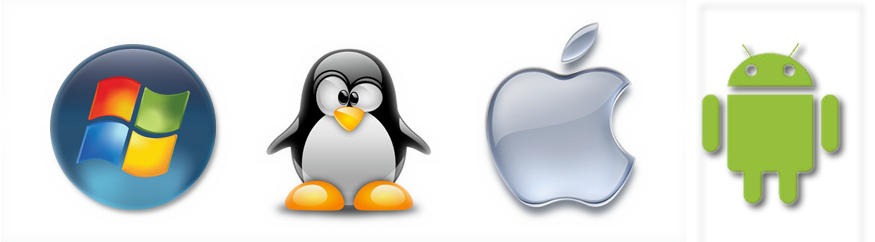
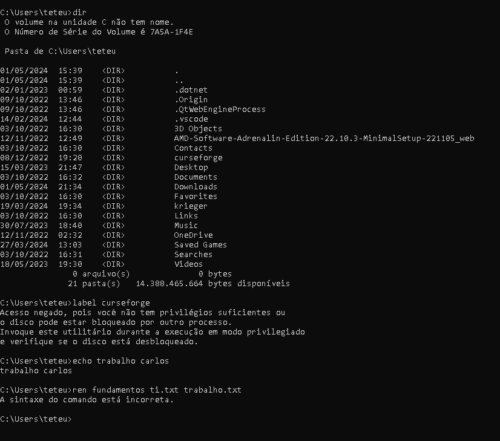
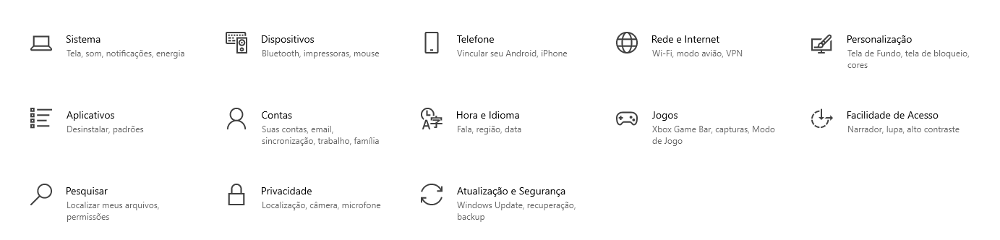

Sistema Operacionl é definido como um software ou um conjunto de softwares, cujo a função é administrar e gerenciar os recursos de um sistema, desde componentes de hardware e arquivos a progamas de terceiros, estebelecendo uma interface entre o usuario e o computador
Exemplos de sistema operacional:
Windows
O Windows é um sistema operacional de interface gráfica multitarefa. Isso significa que podemos trabalhar com vários programas simultaneamente. Por exemplo poderíamos escutar um CD colocado no CD-ROM enquanto escrevemos um documento, imprimimos um outro e recebemos um fax, todos ao mesmo tempo.
macOS
macOS é o nome dado ao sistema operacional dos computadores da Apple, usado em iMacs, Macbooks, Mac Pros, Mac Studios e Mac Minis produzidos pela Gigante de Cupertino. O sistema é o maior rival do Windows no mercado de computadores pessoais e está disponível desde 1984.
Android
Android é o nome do sistema operacional baseado em Linux que opera em celulares (smartphones), netbooks e tablets. É desenvolvido pela Open Handset Alliance, uma aliança entre várias empresas, dentre elas a Google.
Linux
O que é Linux? Linux, ou kernel Linux, funciona como o núcleo de um sistema operacional. Com isso, ele trabalha entre o hardware e a interface de usuário, fornecendo o alicerce para o desenvolvimento e execução de outros softwares, além de permitir controlar o hardware.

Uma interface de linha de comando (CLI) é um mecanismo de software que você usa para interagir com o sistema operacional usando o teclado. Outro mecanismo é uma interface gráfica (GUI), que hoje é popular em todas as aplicações e sistemas de software.

GUI
A GUI, também conhecida como UI (User Interface), é um conjunto de elementos visuais e interativos que permitem aos usuários interagir com um software ou sistema operacional de forma mais amigável e intuitiva.
